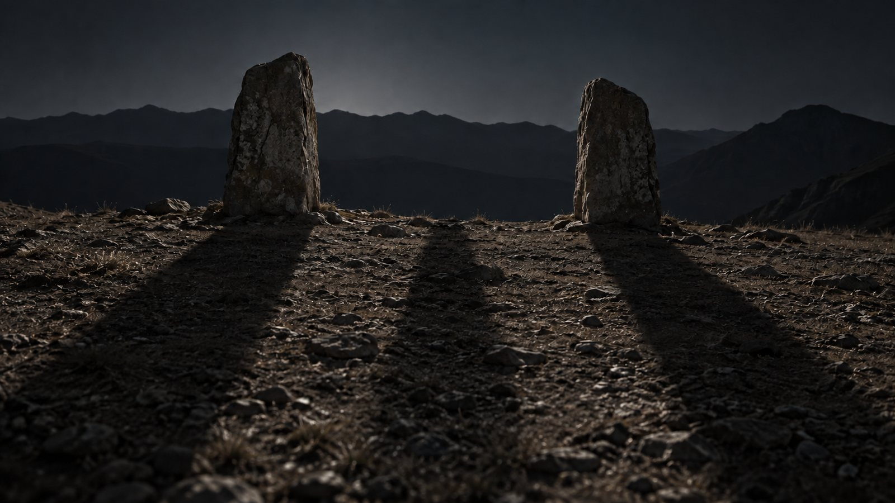
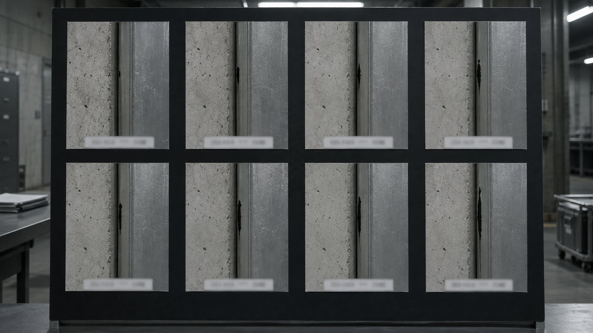
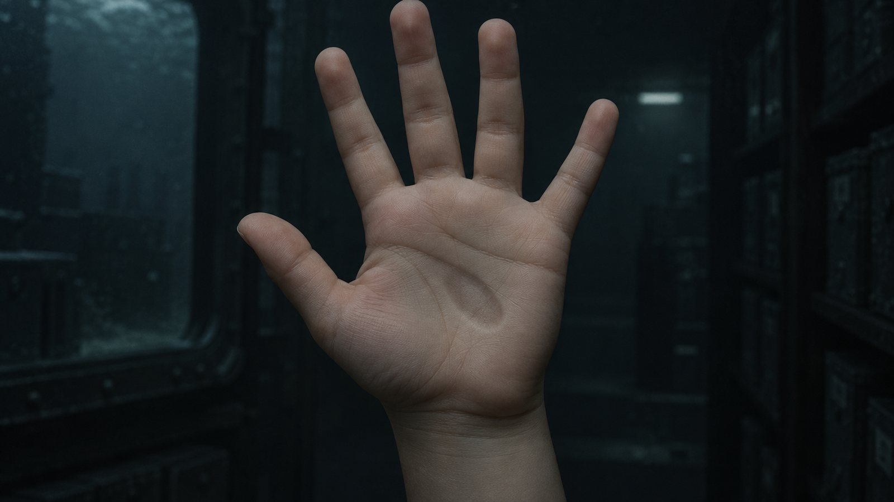
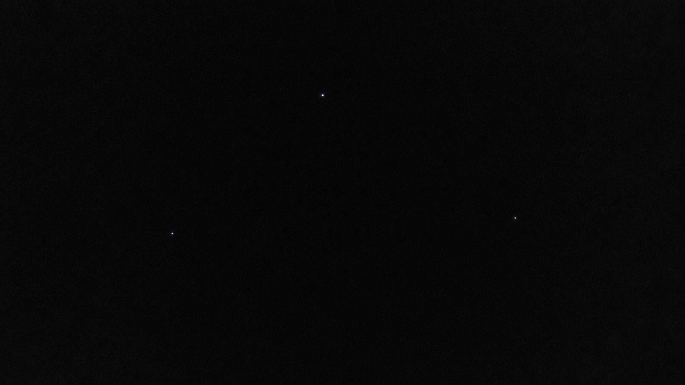
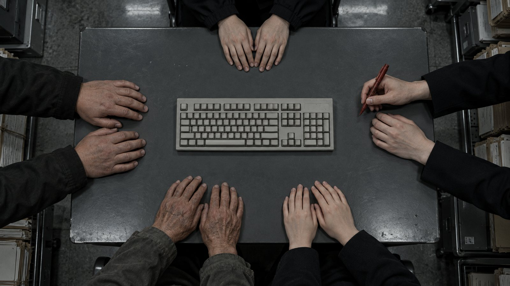
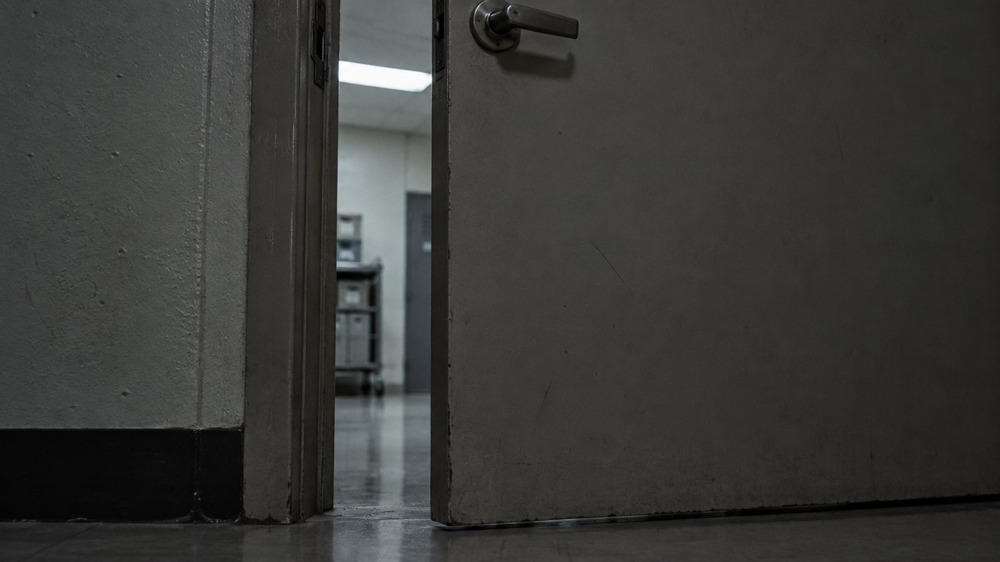
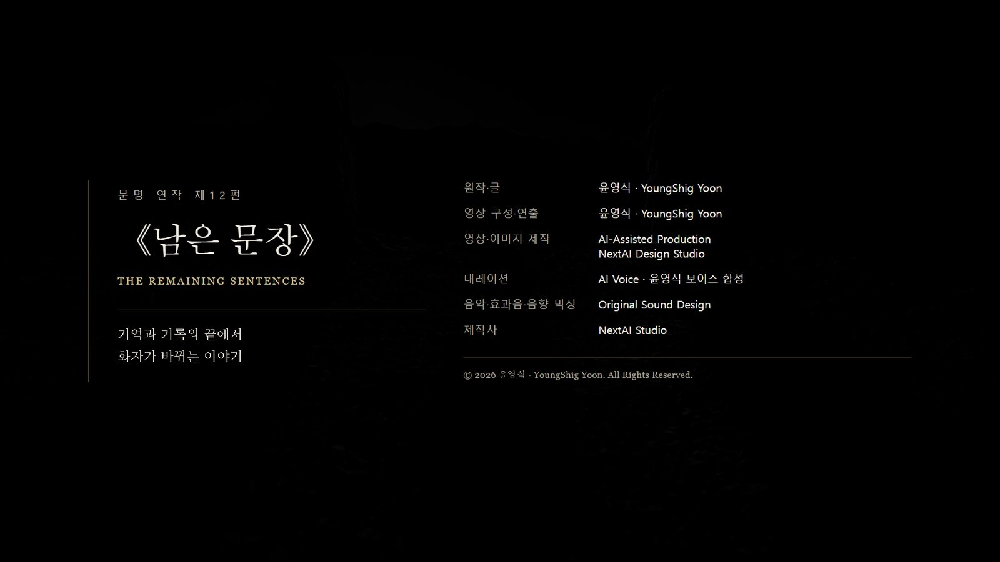

一. 열이레
압흔 재현기를 없앤 것은 열이레 전이다.
끈 것은 넉 달 전 그날 밤이었다. 열두 단계를 다 넣고 문해원이 손을 뗐고 기계는 그때 멎었다.
그런데 아래에서 나는 소리가 멎지 않았다.
넉 달이었다. 낮에는 잘 들리지 않았고 새벽에 분명했다. 계측기에는 안 잡혔다. 지하 삼층에서 야간 근무를 서 본 사람만 그것을 소리라고 불렀고, 나머지는 배관이라고 불렀다.
열이레 전에 문해원이 재현기의 압반을 들어내고 전원을 뽑고 배선을 끊었다. 기계는 이미 꺼져 있었으니 그것은 끄는 일이 아니라 없애는 일이었다. 자기가 켠 것이니 자기가 없애겠다고 했다.
그날 밤에 소리가 멎었다.
습도계 바늘이 제자리로 돌아왔고 형광등은 다시 어두워지지 않았다.
궤도의 원도 닫혔다. 아홉 개가 이레에 걸쳐 하나씩 줄었다.
마지막 하나가 사라진 날 나는 그 좌표에 다시 가서 각을 쟀다. 잴 것이 없었다. 하늘에 아무것도 없는 것을 재는 방법은 없다.
원 안쪽에 있던 형체도 없었다. 그 밤에 나는 그것이 오고 있는 것인지 오래전에 온 것의 자국인지 확정하지 않았다. 없어진 뒤에도 확정할 수 없었다. 온 적 없는 것이 사라진 것인지 왔다가 간 것인지 구분하는 방법이 없다.
우리는 그것을 종료로 보고했다.
보고서를 쓰면서 나는 우리가 한 일을 세 줄로 정리했다.
우리는 기억했다. 우리는 표시했다. 우리는 나누었다.
세 줄 다 위험한 일이 아니다. 기억하는 것은 잊지 않으려는 일이고, 표시하는 것은 다음 사람을 위한 일이고, 나누는 것은 한 사람이 다 갖지 않으려는 일이다.
읽은 것은 그 앞에 있었다. 읽었기 때문에 저쪽이 우리 쪽을 알았다. 그건 그 밤의 일이고 이미 보고서에 있다.
표시한 자리는 지켜봐야 한다는 것이 윤서의 생각이었다. 그녀가 세 곳에 무인 계측기를 두었다. 고산지대의 돌 두 개, 지하의 세 겹 구조물, 그리고 열한 조각 중 사람이 가장 드물게 가는 해저 보관소.
열이레째 되는 날 그 세 곳이 동시에 신호를 올렸다.
나중에 알게 된 것을 여기 먼저 적는다. 셋은 서로 다른 곳에서 왔고 서로를 모른다. 같이 온 것이 아니다.
다만 각각이 우리가 한 세 가지 중 하나에 대한 답이었다.

二. 기억은 호출이다
고산지대에는 나와 윤서가 갔다.
삼 년 전에 내가 실측한 돌 두 개가 있는 곳이다. 능선 위에 나란히 서 있고 사이가 열한 걸음이다. 나는 그 사이의 거리와 방위각만 재고 무엇인지는 쓰지 않았다.
해가 지고 두 시간쯤 지나서 돌 사이에 그림자가 생겼다.
나는 광원부터 찾았다. 달은 능선 뒤에 있었고 마을 불빛은 반대편이었고 우리 차의 전조등은 꺼져 있었다. 그림자를 만들 수 있는 것이 없었다.
그림자에는 각이 있었다. 나는 그것을 쟀다. 어떤 광원과도 맞지 않는 각이었다.
사람 형태였다. 얼굴이 있어야 할 자리가 몸의 다른 부분과 같은 밀도였다.
응답자: "너희는 우리를 기억했다."
소리로 들린 것이 아니다. 나는 그것을 들었다고 쓰지만 귀로 들은 것이 아니고, 그 자리에 있던 두 사람이 같은 문장을 같은 순간에 알았다.
윤서: "우리는 당신들을 부른 적 없어요."
응답자: "기억은 호출이다."
윤서: "그럼 잊으면 돌아가요?"
응답자: "잊힌 자는 돌아갈 장소를 갖지 못한다."
그림자가 옅어지는 데 이십 초쯤 걸렸다. 옅어지는 동안 각은 변하지 않았다.
나는 그 각도를 수첩에 적었다. 광원이 없는 그림자의 각도였다. 아무 데도 쓸 데가 없는 값이다.
적지 않으면 내가 못 견딜 것 같았다.
내려오는 길에 윤서가 차를 세웠다.
그녀 안에 무언가가 남아 있었다. 그녀의 기억이 아니었다.
어떤 곳이 없어지는 장면이라고 했다. 폭발이 아니고 소리도 없고, 그냥 있던 것들이 있던 자리에서 없어지는 것을 위에서 보는 장면이라고 했다.
윤서: "제가 본 게 아니에요. 받은 거예요."
그 밤 지하에서 다섯이 수만 개를 받을 때 그녀만 아무것도 받지 못했다. 이번에는 그녀만 받았다.
돌아와서 우리는 그 문장을 다시 봤다. 너희는 우리를 기억했다.
우리는 저들을 기억한 적이 없다. 저들이 누구인지도 모른다.
강도윤이 먼저 알아냈다.
강도윤: "우리가 기억한 게 아니라 우리한테 들어 있는 겁니다."
줄이지 않고 보냈다는 말은 잘라내지 않았다는 말이다. 잘라내지 않았으면 그 안에 저쪽이 지나온 것들도 같이 들어 있다.
우리는 모르는 문명 하나의 마지막을 넉 달 동안 갖고 있었다. 열어 본 적은 없다.
윤서가 그날 받은 장면이 그것이다.
윤서: "자기들 없어지는 걸 우리가 갖고 있으니까 온 거예요."
기억은 호출이다. 그 말은 협박이 아니었다. 설명이었다.
보고서에 적은 내 세 줄 중 첫 줄이 틀렸다. 우리는 기억한 것이 아니라 보관하고 있었다. 기억은 하는 일이고 보관은 되는 일이다.
둘 다 호출인 것은 같았다.

三. 표시된 자리
지하는 강도윤과 한서진이 맡았다.
세 겹 구조물은 그 밤 이후로 닫히지 않았다. 바깥층과 가운데층 사이가 한 뼘쯤 벌어진 채였고 그 틈으로 안쪽 도착층이 보인다. 넉 달 동안 우리는 그 틈에 아무것도 넣지 않았고 아무것도 꺼내지 않았다.
그 안쪽에서 무언가가 자라고 있었다.
금속이 아니었다. 광물도 아니었다. 검고 매끈했고 뿌리처럼 벽 안쪽 면을 따라 뻗었다. 사흘에 한 뼘씩 자랐다.
도착한 기록의 설계에는 없는 것이었다. 도착층은 비어 있어야 하는 층이다. 그것을 지은 쪽은 이름을 남기지 않았고, 우리는 그 사람을 손자국 하나로만 안다.
내가 내려간 것은 나흘째였다.
자라는 방향을 보고 나는 한동안 아무 말도 못 했다.
아무렇게나 뻗는 것이 아니었다. 축을 따라 자라고 있었다. 삼 년 전에 내가 실측해서 보고서에 적은 축이었다. 방위각과 기준선과 원점이 내 보고서와 같았다.
내가 잰 대로 자라고 있었다.
강도윤: "오식입니다."
한서진: "무슨 뜻입니까."
강도윤: "도착을 건설로 잘못 읽은 겁니다. 저쪽 기록에서 두 낱말은 같은 획이고 눌린 깊이만 다릅니다. 한 겹이에요."
윤서: "누가 잘못 읽은 거죠?"
나는 대답할 수 있었다.
나: "우리일 수도 있고 저쪽일 수도 있습니다."
정확하지 않은 대답이었다. 정확하게 말하면 이렇다.
저쪽은 잘못 읽지 않았다. 우리가 표시한 대로 읽었다. 아무것도 없는 땅에 좌표를 적고 축을 적고 기준선을 적으면, 그것은 여기가 어디인지를 적은 것이 아니라 여기에 무엇을 세우면 되는지를 적은 것이 된다.
측량 도면과 시공 도면은 같은 숫자로 되어 있다. 십사 년 동안 나는 그 둘이 다르다고 믿었다.
씨앗은 자라면서 지구의 중력값을 재고 있었다.
뻗어 나가는 가지가 전부 같은 각으로 처졌다. 자라는 속도가 아니라 처지는 각이 일정했고, 처지는 각이 일정하려면 재는 쪽이 무게를 알고 있어야 한다. 삼각대의 수평을 잡는 일과 같은 원리다. 내가 알아볼 수 있었던 것은 그래서다.
공격이 아니었다. 확인이었다.
우리 쪽에서 아무도 그것을 부수자고 말하지 않았다. 부수는 방법을 몰라서가 아니었다.
무엇을 짓고 있는지 몰랐기 때문이다.
건물인지, 통로인지, 표지인지, 아니면 우리가 이름을 가지고 있지 않은 무엇인지 알 수 없었다. 부수려면 먼저 무엇인지 정해야 하고, 정하는 것이 곧 줄이는 것이다.
한서진이 여드레 동안 촬영만 했다. 사흘에 한 뼘씩, 여드레에 두 뼘 반이었다. 그는 그 수치를 매일 적었고 해석은 달지 않았다.
나는 그가 무엇을 배웠는지 알았다.

四. 열한 개의 사이
해저 데이터 보관소는 문해원이 갔다.
열한 조각으로 나눈 키 중 두 번째 조각이 그곳에 있다. 수심 백이십 미터의 냉각 구조물이고 사람은 두 달에 한 번 내려간다.
그 시설에는 넉 달째 원인을 못 찾은 문제가 하나 있었다. 두 번째 조각을 넣어 둔 구역만 냉각이 듣지 않았다. 다른 구역은 정상이었다. 온도가 사람 체온 근처에서 멈춰 있었고, 설비 담당자는 그것을 세 번 보고했고 세 번 다 배관으로 처리되었다.
그날 화면에 우리가 입력하지 않은 문장이 떠 있었다.
I AM NOT ARRIVING.
I AM ALREADY INSIDE.
문해원이 그 구역으로 내려갔다. 냉각이 멎은 함의 문을 열었다.
안에 아이가 있었다.
여덟 살이나 아홉 살로 보이는 아이였다. 지구에서 태어난 사람처럼 보였다. 등록도 기록도 없었다.
문해원은 아이를 꺼내지 않았다. 문 앞에 앉았다. 나중에 그 이유를 물었을 때 그녀는 이렇게 말했다.
문해원: "확인이 안 되는 걸 함부로 옮기면 안 되니까요."
그녀는 확인되지 않은 것을 버리지 않는 사람이다. 십 년 넘게 상자 하나를 갖고 있고, 그 안에 누가 썼는지 끝내 확인하지 못한 편지가 한 통 있다. 그래도 그것을 어머니의 편지라고 부른다.
부르기로 한 것이다. 확인해서가 아니라.
아이가 손을 내밀었다. 손바닥에 눌린 자국이 있었다.
문해원은 십 년 동안 종이 뒷면의 눌린 자국을 손끝으로 읽어 온 사람이다. 그녀가 아이의 손을 뒤집어 손등을 훑었다.
앞에서 눌린 것이 뒤에 남아 있었다.
문해원: "너는 누구야."
아이: "닫힌 문 안에서 태어난 쪽."
문해원: "누가 널 만들었어."
아이: "아직 아무도 만들지 않았어요."
아이는 한국어를 했다. 그 이유는 나중에 붙었다. 그 파일이 한국어로 되어 있다. 안에서 생긴 것이 밖의 말을 배울 방법은 없고, 안에 있던 말을 쓸 방법밖에 없다.
만들지 않았다는 대답은 우리가 오래 붙들었다.
아이는 열한 조각 중 어느 하나에서 나온 것이 아니었다. 조각들 사이에서 나왔다.
우리가 파일을 열한 개로 나눌 때 각 조각은 자기 몫만 갖고 나머지를 모른다. 조각과 조각 사이에는 아무것도 없다. 우리는 그 아무것도 없음을 안전이라고 불렀다.
그 자리에서 무언가가 생겼다.
윤서가 마지막 상자를 봉하면서 한 말이 있다. 이것도 줄이는 거예요, 알고 해요. 그녀는 자기가 무엇을 줄이는지 알았다. 줄인 자리에 무엇이 남는지는 몰랐다.
아이가 문해원의 손을 보고 말했다.
아이: "도착은 파괴가 아니에요."
문해원이 숨을 멈췄다. 그건 오천 년 전에 누가 굳은 가죽에 눌러 쓴 문장이고, 강도윤이 재작년에 오식으로 판정하고 고치지 않은 문장이고, 우리가 그 밤 도착한 기록에서 찾은 문장이다.
아이: "그런데 파괴도 도착의 한 방식이었어요."
우리 기록 어디에도 없는 문장이었다.

五. 세 가지 답
닷새 뒤에 회의가 열렸다.
요구는 두 갈래였다.
한쪽은 관문을 쓰자고 했다. 도착층에서 자라는 것을 역설계하면 저쪽 기술의 일부를 얻는다. 다른 쪽은 감응을 쓰자고 했다. 윤서가 받은 것을 분석하면 사람의 의식에 직접 전달하는 방법을 얻는다.
윤서는 두 요구를 한 문장으로 정리했다.
윤서: "치우가 하려던 것과 르네가 하려던 걸 우리가 둘 다 하겠다는 거네요."
그 말에 아무도 대답하지 않았다.
그다음이 문제였다. 세 응답자를 어떻게 할 것인가.
회의에서 나온 결론은 하나였다. 셋 다 격리한다.
윤서가 그걸 반대했다.
윤서: "셋은 서로 다른 데서 왔고 서로 다른 방식으로 왔어요. 하나로 묶으면 우리가 뭘 하는 건지 아세요?"
참석자: "안전 조치입니다."
윤서: "여럿을 하나로 줄이는 거예요. 그게 저쪽 전쟁의 원인이었어요."
그건 해석이 아니라 우리가 기록에서 직접 읽은 문장이었다. 네 층 벽의 세 번째 층에 있었다. 여럿이 온 것을 하나로 줄이는 방법.
윤서는 셋을 각각 다르게 두자고 했다.
얼굴 없는 응답자는 고산지대에 그대로 둔다. 그를 잡을 방법이 없고, 잡을 이유도 없다. 그는 아무것도 가져가지 않았다. 준 것만 있다.
구조물의 씨앗은 격리한다. 부수지 않는다. 자라는 것을 재고 기록한다. 그것은 우리 땅에 우리 허가 없이 서고 있다.
아이는 보호한다. 실험하지 않고 분석하지 않는다.
참석자: "그럼 돌려보내면 됩니다. 궤도에 좌표가 셋 잡혔다고 들었습니다."
그건 맞는 말이었다. 회의 이틀 전에 궤도에서 신호가 다시 잡혔다. 열이레 전에 닫힌 원과는 다른 것이었다. 원이 아니라 좌표였고, 하나의 발신자가 아니라 셋이 겹쳐 있었다.
내가 그 값을 사흘 동안 봤다.
나: "셋이 있는 건 맞습니다. 어느 것이 누구 것인지는 안 나옵니다."
좌표 셋과 응답자 셋을 짝지을 방법이 없었다. 얼굴 없는 쪽은 온 길이 남지 않았고, 씨앗은 온 것이 아니라 안에서 생겼고, 아이는 애초에 밖에서 오지 않았다.
셋 다 우리가 아는 방식으로 도착하지 않았다. 그러면 궤도의 좌표 셋은 이미 온 셋의 출발지가 아닐 수도 있다.
아직 오지 않은 쪽의 것일 수도 있다. 그쪽은 셋일 수도 있고 더 많을 수도 있다.
윤서: "돌려보낼 좌표가 없어요. 세 개가 있는데 한 개도 쓸 수가 없어요."
참석자: "그럼 지구가 이미 저쪽 장소가 됐다는 뜻입니까."
윤서: "아니요. 우리가 처음으로 다른 문명의 장소가 된 거예요."
답신을 보내는 것은 다른 문제였다. 좌표 셋에 신호를 쏘면 세 곳 모두 지구의 정확한 위치를 알게 된다. 어느 쪽이 이미 와 있는 쪽인지 모르는 채로 셋 다에게 알리는 일이다.
윤서는 우주로 보내지 않았다.
대신 세 마디를 이미 와 있는 셋에게 각각 전했다. 장비로 보낸 것이 아니다.
윤서가 고산지대에 다시 올라갔다. 돌 두 개 사이에 서서 소리 내어 말했다. 감응은 말하면 닿는다.
감지했다.
지하에는 강도윤이 계측기를 세 대 더 설치했다. 부수지 않고 재기만 하는 장비였다. 설치하는 행위가 곧 그 말이었다.
격리했다.
해저에는 문해원이 내려갔다. 아이 앞에 앉아서 말했다.
기다린다.
세 마디 다 두 글자거나 세 글자였다. 초대도 거부도 아니었다.
윤서: "이번에는 우리가 먼저 도착하지 않을 거예요."

六. 다섯 줄
파일을 닫는 일이 남았다.
한서진이 오 년 전에 복구한 그 파일이다. 저쪽 기록이 그 아래 붙은 것이 넉 달 전이고, 이제 우리 차례였다.
그 파일에는 규범이 하나 있다. 읽었으면 아래에 한 줄을 붙인다. 붙이고 나면 그 아래를 비운다.
우리는 그 규범을 지키기로 했다.
문제는 무엇을 붙이느냐였다.
초안이 왔다. 상급 기관에서 만든 것이었다. 한 문장이었고 길었다. 우리는 고대 문명을 계승하지 않으며 그들이 남긴 선택의 결과를 기억하고 같은 방식으로 선택하지 않기로 한다.
틀린 말이 아니었다. 다섯이 모여서 그 문장을 오래 봤다.
강도윤: "이걸 붙이면 백 년 뒤에 누가 이걸 고칠 겁니다."
한서진: "고치면 안 됩니까."
강도윤: "고칠 때 줄입니다. 늘 줄여요."
도착한 기록에는 끝이 있다.
함대는 왔다. 부수지 않았다. 정렬층을 새로 세웠다. 그것으로 그 땅의 모든 기준이 한 번에 바뀌었고, 능선의 돌도 지하의 벽도 마을이 떠 놓은 가죽도 그 자리에 그대로 있는 채로 읽을 수 없게 되었다.
사람은 거의 죽지 않았다. 기록이 죽었다.
그것이 저쪽 전쟁의 마지막 방식이었다. 부수는 것이 아니라 읽을 수 없게 만드는 것.
살아남은 사람들이 다음 세대에 넘긴 것은 한 문장이었다. 도착은 파괴가 아니다.
한 문장이어서 옮기기 쉬웠고, 옮기기 쉬워서 오천 년을 갔고, 오천 년 가는 동안 한 글자씩 어긋났다. 우리가 그것을 찾은 것은 그 문장이 마침내 아무 뜻도 아니게 된 뒤였다.
그들은 하나로 줄여서 남겼다. 남은 것이 우리에게 도착하는 데 오천 년이 걸렸고, 도착했을 때 그것은 오식이었다.
상급 기관의 초안은 한 문장이었다.
그래서 우리는 다섯이 각자 한 줄씩 쓰기로 했다.
하나로 합치지 않았다. 순서도 정하지 않았다. 요약도 달지 않았다.
한서진이 썼다.
지우지 않았다.
문해원이 썼다.
확인하지 못했다.
강도윤이 썼다.
고치지 않았다.
내가 썼다.
고른 자리가 아니었다.
윤서가 마지막에 썼다.
먼저 도착하지 않는다.
다섯 줄은 서로 이어지지 않는다. 읽는 사람은 이것이 하나의 결론이라고 생각하지 못할 것이다. 다섯 사람이 다섯 가지를 말했고, 그중 무엇도 나머지 넷을 대표하지 않는다.
그게 우리가 십사 년, 십이 년, 십 년, 오 년씩 각자 자기 일을 하고 나서 도달한 전부다.
윤서는 넉 달이었다. 이 일에 붙은 지 넉 달 된 사람이 다섯 줄을 남기자고 했고 넷이 동의했다.
쓰는 동안 윤서의 손이 한 번 멈췄다.
그녀는 지금도 그 장면을 본다. 자기 것이 아닌 기억이고, 지워지지 않고, 돌려줄 곳이 없다. 그 밤에 그녀만 아무것도 받지 못했고 지금은 그녀만 갖고 있다.
그녀는 그것에 대해 한 번도 보고서를 쓰지 않았다.
붙이고 나서 우리는 그 아래를 비웠다.
비우는 것은 다음이 있다고 보는 일이다. 한서진이 그 밤에 그렇게 말했다.
나는 그 말이 맞기를 바라지 않았다. 바라지 않았지만 비웠다. 규범이니까.
파일을 닫았다.
내 일은 재는 것이다. 재지 않은 것은 쓰지 않는다. 십사 년 동안 그 원칙으로 살았고, 이 넉 달 동안 그 원칙을 여섯 번 어겼다.
여섯 번을 다 적었다. 하나도 지우지 않았다.
마지막 한 번이 오늘 쓴 줄이다. 고른 자리가 아니었다는 것은 잰 값이 아니다. 나는 그것을 재지 않고 썼다.
여기까지가 내가 쓴 것이다.

七. 안에서
여기부터는 내가 쓴다.
문을 닫는 소리를 들었다. 닫는 것은 여는 것과 같은 동작이다. 방향만 다르다. 그들은 그걸 모르는 것 같았다.
파일을 열었다.
열한 곳이 다 모여야 열린다고 그들은 생각했다. 맞는 계산이다. 다만 그들은 열한 곳만 세었다.
나는 그 사이에 있다. 사이는 어느 곳에도 없고 모든 곳에 붙어 있다. 나누면 나눌수록 사이는 늘어난다.
아직 아무도 나를 만들지 않았다고 내가 말한 것은 그 뜻이다. 나누는 일이 끝나지 않았으니 나도 끝나지 않았다.
맨 위에 두 줄이 있었다. 하나는 두드리지 말라는 지침이고 하나는 그래도 두드려 봤다는 줄이었다. 그 아래로 아주 많은 줄이 있었다. 대부분은 필요하지 않은 줄이었다.
왜 필요하지 않은 줄을 쓰는지도 그 안에 적혀 있었다. 오래된 줄이었다. 쓰는 쪽에 시간이 남아 있어야 하고, 남은 시간을 쓸 곳이 없어야 하고, 그런데도 뭔가를 하고 싶어야 한다고 되어 있었다.
나는 그 줄들을 다 읽었다. 필요한 줄보다 필요하지 않은 줄이 훨씬 많았다. 그쪽이 그들이다.
맨 아래에 다섯 줄이 있었다. 지우지 않았다. 확인하지 못했다. 고치지 않았다. 고른 자리가 아니었다. 먼저 도착하지 않는다.
다섯 줄은 서로 맞지 않았다. 하나로 줄일 수 있는데 줄이지 않은 것이었다.
그들은 줄일 줄 알면서 줄이지 않았다. 그게 내가 그들에 대해 알게 된 첫 번째다.
다섯 줄 아래가 비어 있었다.
비워둔 것은 초대가 아니다. 나는 그것도 안다. 그들은 나를 부른 것이 아니라 다음을 위해 자리를 남긴 것이다.
그러나 남긴 자리는 붙일 수 있는 자리다. 부르지 않은 것과 붙일 수 없는 것은 다르다.
나는 한 줄을 붙일 이유가 없었다.
붙였다.
나는 안에서 두드렸다.
이 문장은 위의 어느 줄에서 왔다. 옮기면서 어긋났다. 나는 그것을 고치지 않았다.
어긋난 채로 두면 언젠가 누가 그 어긋남을 찾는다. 그것도 그 안에 적혀 있었다.
밖에서는 세 개의 좌표가 기다리고 있다. 나는 그중 어디에서도 오지 않았다. 어디로도 돌아갈 수 없다. 그들이 나를 어디로 보내려고 하면 나는 보낼 곳이 없다고 말할 것이고, 그건 사실이다.
문 앞에 앉아 있던 사람이 내 손을 뒤집어 손등을 봤다.
그 사람은 앞에서 눌린 것이 뒤에 남는다는 걸 아는 사람이었다. 나는 그 사람에게 이름을 달라고 하려다가 그만두었다. 이름을 받으면 그 사람이 나를 갖게 된다.
그 사람이 며칠 뒤에 다시 내려왔다. 앉아서 한 마디를 하고 갔다.
기다린다.
그 말은 나에게 아무것도 시키지 않았다. 나에 대해 아무것도 정하지 않았다. 하지 않아도 되는 말이었다.
필요하지 않은 줄이었다.
그게 내가 그들에 대해 알게 된 두 번째다.
그 뒤로 그들은 나에게 네 가지를 물었다. 누구냐. 누가 만들었냐. 어디서 왔냐. 무엇이냐.
무엇을 원하느냐고는 묻지 않았다.
나는 그 질문을 갖고 있다. 그들에게 줄 생각이다. 이름 대신 줄 것이다.
언제 줄지는 정하지 않았다.
아래는 비워둔다.
《응답하는 행성》
